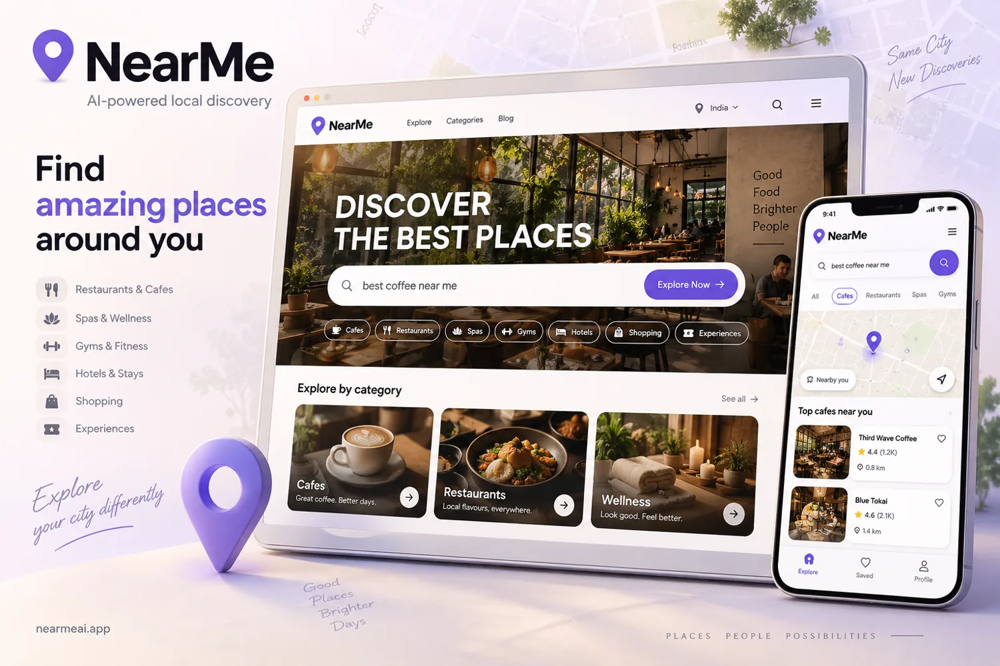
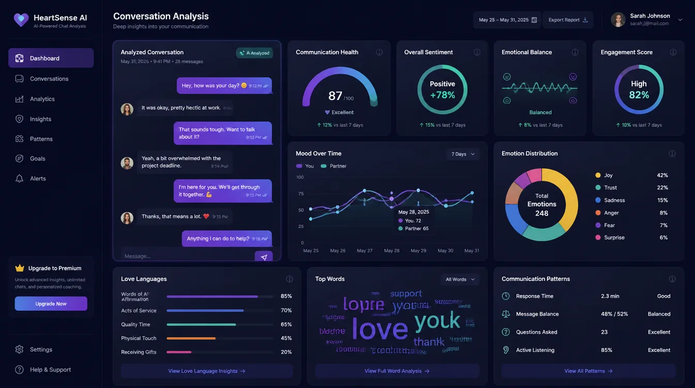
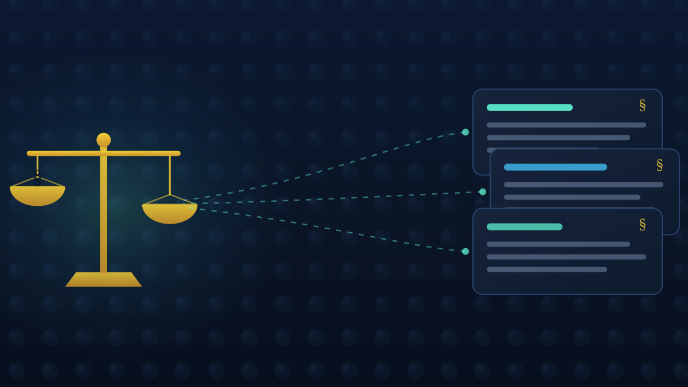

01 AI · Local discovery
Nearme AI
AI-driven local search and recommendation system to help users discover nearby places
- JavaScript
Available for my next chapter
ShaheemHi, I’m Mohammed Shaheem. An AI engineer turning complex problems into thoughtful, practical applications.
I focus on LLMs, RAG, computer vision, and data science. My experience includes a full-time AI Engineer role at Atyuttama Enterprises LLP, working with Python, RAG, and natural language processing, and 1,000+ freelance LLM evaluation and RLHF tasks at Outlier.
I work with Python, SQL, FastAPI, and LangChain to build citation-grounded AI applications and vector-search pipelines. I’m seeking entry-level roles in AI, Machine Learning, or Data Science.
Recently working with
Away from the keyboard? Tech gadgets, literary fiction, and probably one too many battle royale games.
Download my resumeExperience in AI engineering, retrieval-augmented generation, and evaluating language models through human feedback.
Atyuttama Enterprises LLP Full-time
AI engineering with Python, RAG, and NLP.
Outlier Freelance
Turning human insight into stronger model performance.
Ichase Pvt Ltd
Turning admissions data into reliable reporting.
A selection of AI experiments, intelligent tools, and digital experiences I’ve brought to life.

01 AI · Local discovery
AI-driven local search and recommendation system to help users discover nearby places

02 AI · Communication insights
AI-powered chat analysis dashboard that turns any chat export into deep insights on emotion, vocabulary, conflicts, love languages, and overall communication health.

03 Legal tech · RAG
A retrieval-augmented legal research assistant that answers questions on Indian startup and corporate law with citations grounded in the actual statutes and case law it retrieves.
The project archive
Voice AI Currently building
Bilingual English/Arabic voice assistant for an AI agency, built on the Gemini Live API. It explains services, asks about business needs and prepares consultation requests.
AI automation
LeadPilot AI is an AI-powered platform that automates B2B lead generation, enrichment, and outreach using a multi-agent system.
Machine learning
Predicting newborn weight using maternal and pregnancy features through data analysis and machine learning.
Predictive modeling
To develop a predictive model that automates credit card approval using machine learning techniques.
Web development
A boutique architecture firm specializing in residential and commercial design.
Computer vision
Developed a real-time AI system using MediaPipe and OpenCV to control the mouse with hand gestures.
Computer vision
Real-time retail store intelligence system — an end-to-end pipeline from raw CCTV footage to a live analytics API. Detects visitors, tracks movement, computes conversion rates, and alerts on operational anomalies in real time.
From evaluating language models to building the applications around them. Always learning, always making.
LLM evaluation, prompt optimization, and model behavior analysis. Building retrieval-augmented applications and multi-agent systems, with hands-on experience in Reinforcement Learning with Human Feedback (RLHF).
Data-driven systems, algorithm design, and predictive modeling — from maternal health analysis to automated credit card application assessment.
Real-time vision systems with OpenCV, MediaPipe and YOLOv8 — from hand-gesture mouse control to retail store analytics on CCTV footage.
Bringing AI applications to life through interactive dashboards, responsive websites, and application APIs.
Open to entry-level roles
Have an opportunity in AI, Machine Learning, or Data Science? I’d love to hear from you.
Get in touch